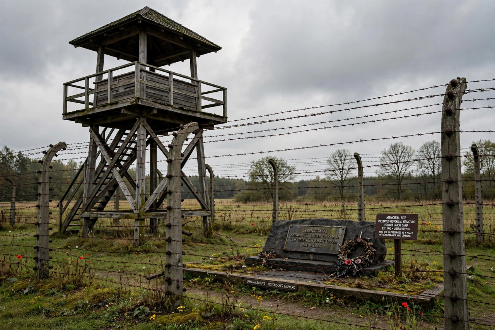

Nazi concentration camps
| Nazi concentration camps | |
|---|---|
 | |
| Period | 1933–1945 |
| Administered by | SS (Inspectorate of Concentration Camps; SS-WVHA) |
| Scale | More than 1,000 camps and subcamps; some 1.65 million registered prisoners |
| First camp | Dachau (opened March 1933) |
Nazi concentration camps were camps established throughout Germany and German-occupied Europe between 1933 and 1945, in which millions of people were imprisoned and murdered. Initially used to terrorize political opponents, the camp system expanded to imprison Jews, Roma, Poles, Soviet prisoners of war, Jehovah's Witnesses, homosexuals, people with disabilities, and others deemed enemies or racially inferior by the Nazi state. Of an estimated 1.65 million people registered in the main camps, at least 1.1 million died. The camps were central to Nazi persecution and to the Holocaust, though the dedicated extermination camps — Chełmno, Bełżec, Sobibór, Treblinka, Auschwitz-Birkenau, and Majdanek — operated partly outside the concentration-camp administration.
Development
The first camp, Dachau, opened in March 1933, weeks after Hitler came to power, initially for Communists and Social Democrats. Under SS chief Heinrich Himmler and camp inspector Theodor Eicke, the system was consolidated into large purpose-built camps such as Sachsenhausen (1936), Buchenwald (1937), Flossenbürg and Mauthausen (1938), and Ravensbrück for women (1939). After the Kristallnacht pogrom of 1938, some 30,000 Jewish men were temporarily imprisoned to force emigration.
The war years
During World War II the system ballooned to well over a thousand camps and subcamps. Prisoners performed forced labour in armaments, quarries, and construction under conditions of starvation, disease, beatings, and medical experiments; "extermination through labour" was official policy for many categories. Jews and Roma were deported to camps in huge numbers from 1942. As Allied armies advanced in 1945, the SS evacuated camps in death marches that killed hundreds of thousands of prisoners.
Liberation and memory
Allied liberations — Majdanek by Soviet forces in July 1944, Auschwitz in January 1945, Buchenwald and Dachau by American troops in April 1945 — exposed the system to the world. Former camps became memorial sites and museums, evidence from them underpinned the Nuremberg trials, and survivor testimony is preserved by Yad Vashem and the United States Holocaust Memorial Museum.